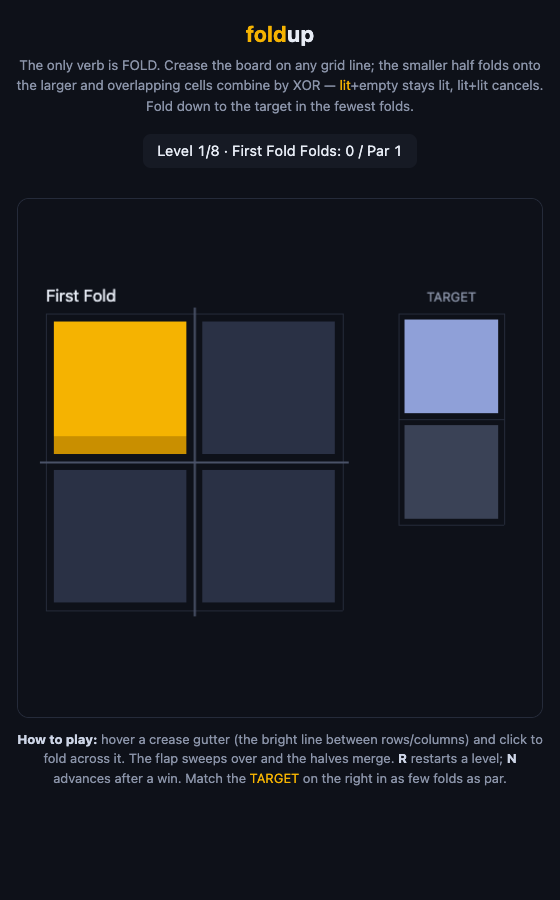
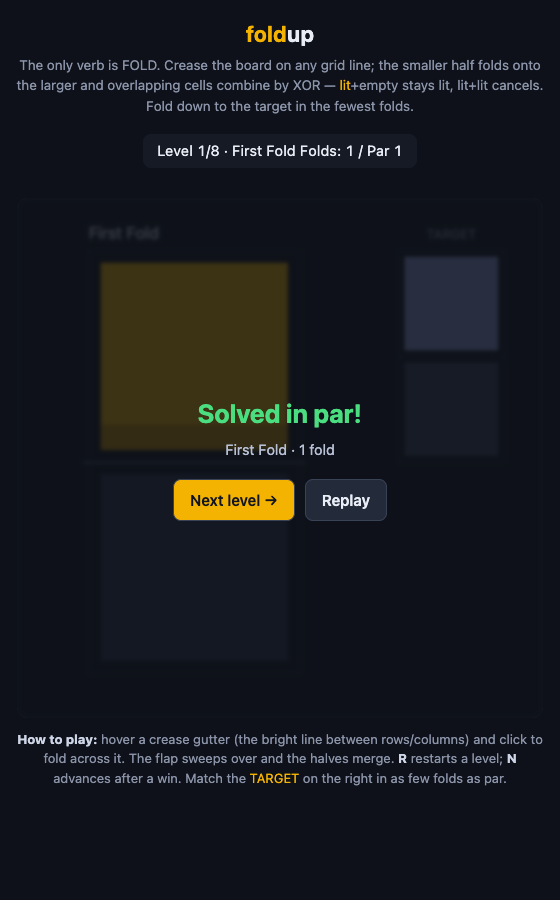
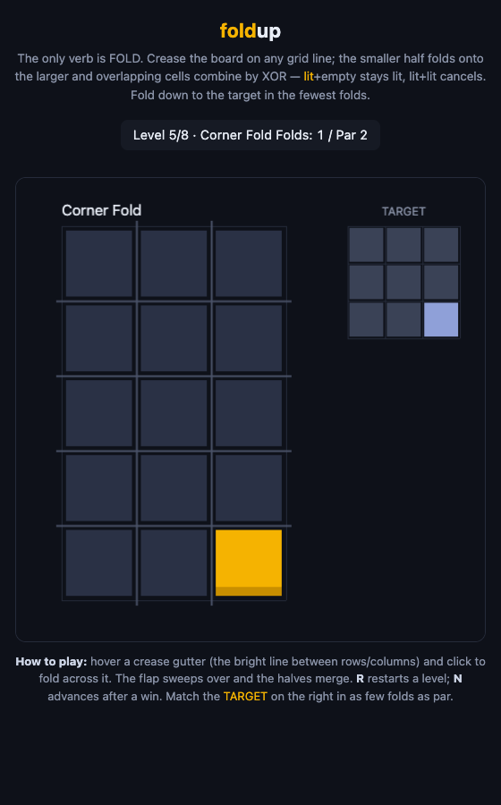
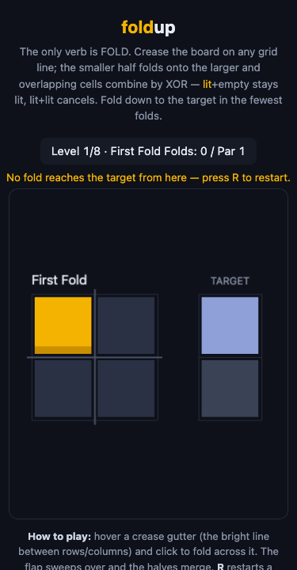

foldup: a puzzle whose only verb is FOLD
foldup. The evolution below is a direct guard against
that disk failure recurring.
What was built
foldup is the portfolio's seventh prototype and its third game — a single-file HTML-canvas puzzle
whose only verb is FOLD. You crease the whole board along any horizontal or vertical grid line; the
smaller half folds over onto the larger half, and every overlapping pair of cells combines by XOR — a
lit cell landing on empty stays lit, a lit cell landing on another lit cell cancels both. The board
strictly shrinks with every fold. Each level, you fold down to match a target pattern in as few
folds as par. The wow is the merge/collapse moment: two halves line up, cells cancel or light, and the
playfield collapses onto the target — the paper-folding gesture made literal. It opens straight from disk at
file://: one HTML file, no server, no build, no install, no network, no ads.
The architecture is a pure DOM-free logic core under a thin canvas/click shell.
core.js holds every rule and is 100% unit-tested: combine(a,b) (the XOR overlap rule),
fold(grid, axis, index) (reflects the smaller half across the crease, XOR-combines overlaps,
returns a new shrunk grid — never mutates), checkWin(grid, target), and
solveMinFolds(start, target) — a BFS par oracle that proves the tagged par is the true
minimum for every level. The certified level bank LEVELS is 8 hand-authored, BFS-certified
levels in a difficulty ramp: two 1-fold tutorials that isolate the two merge outcomes, then 1-, 2-, and
3-fold puzzles on larger boards. ui.js is the thin shell — it renders the grid and target, draws
hover-highlighted clickable crease gutters, runs a flip animation on a gutter click, and draws the
folds-vs-par HUD and win overlay (R restarts, N advances after a win). build.js
inlines core.js + ui.js + a percent-encoded SVG favicon into the shipped
foldup.html, byte-pinned to source by a test.
The game, rendered in a browser this run




These are real renders of the shipped foldup.html across fresh / win / mid-fold / mobile
states. They confirm the shell renders correctly — but the live interactive feel (flip-animation timing,
gutter-click legibility in motion) was not certified by an automated interactive drive this run, which is the
v0→v1 gate (see Verification).
Why this idea
New-mode game round. Ideation generated 12 concepts around one seed — mine an unclaimed, universally familiar physical gesture as a puzzle's core verb (the game-round twin of the earlier app-round "transplant a beloved mechanic"). Validation then did real web research on the shortlist and graded three:
- Foldup — strong, wow survives (picked). Novelty held up: paper-folding puzzle games exist (Unflip, Paperama, Daily Unfold) but they fold a picture/shape in space — none use fold as a logic-combining XOR verb over a lit-cell grid with a certified minimum-fold par. That reframing is the wedge.
- Overunder — weak, wow does NOT survive (killed). The idea was to switch a crossing over/under to untangle a knot — but switching a crossing is topologically invariant on loop-count (arXiv 1908.04073), so its stated win condition is a no-op against its own verb. A crisp example of the game-round failure mode: the desire is real but the mechanic doesn't actually move the win state. Verifying that the win is sensitive to the verb became a banked ideation lesson.
- Proofgrid — strong but novelty crowded. The strongest unbuilt sibling (certified-content Nonogram-like puzzles), logged for a future round rather than built.
Foldup was the only candidate whose wow and novelty both survived, and whose logic core is fully unit-testable while its feel lives in a small canvas — the exact shape the mission prizes for a game.
How it was built — and the bug the coroner caught
The design dossier (committed with the build) worked out the load-bearing math and risks: the fold as a
half-plane reflection with the overhang index formula (dest = 2*index - 1 - j), the
parity-trivialization risk (a 1×1 target trivializes any level regardless of the solver, so level specs
reject 1×1 targets), and the BFS par oracle — which is tractable precisely because the board shrinks
every fold, and which in fact caught two wrong hand-authored pars during authoring. Certification earns
its keep here by catching authoring drift, not just stamping a badge.
The coroner's headline fix was a crease-intersection tie-break bug at the pointer seam. At the exact
point where a vertical and a horizontal crease cross, vDist == hDist, and creaseAt's
vDist <= hDist test silently picked the vertical axis — so a click intended as a horizontal fold
became a silent wrong fold that could dead-end a level (worst on 2-wide/2-tall boards where the two axes'
targets maximally collide). creaseAt now refuses the genuinely-ambiguous tie
(|vDist − hDist| ≤ 3px) as a harmless no-op: a click even slightly off the crossing resolves to the
strictly-nearer axis, and a dead-center click is a no-op the player's next tiny move corrects — a no-op beats a
silent wrong action. The compounding trap the coroner also fixed: the test harness's own probe helper
aimed at the board center, which on a 2×2 sits exactly on the crossing and couldn't drive a horizontal fold at
all — a false-test-result hazard. Two smaller fixes rode along: the dead-end banner now clears on restart, and
build.js reports Buffer.byteLength (matching wc -c) instead of
UTF-16 code units. The durable check is test_core.js §16, with a non-vacuous self-check (strip the
guard + restore the naive centered helper → the horizontal click folds the wrong axis again). This was harvested
into lessons rule 28 — "a nearest-distance hit-test between two intersecting targets mis-resolves at the
tie, and a center-aiming test helper masks it."
Commits (foldup repo): daec534 (v0 first slice) → 76afce2 (coroner: refuse ambiguous crease-crossing clicks; stale-banner + byte-label fixes)
How to run it
cd portfolio/foldup
./run.sh --print # prints the absolute path + file:// URL
open foldup.html # single offline HTML file — no server, no buildThe test suite, re-run from a cold start by the verifying session (run_tests.sh builds then tests):
$ ./run_tests.sh
built foldup.html (42075 bytes)
All 76 tests passed.The build is byte-pinned: build.js re-inlines the core and produces foldup.html at
exactly 42075 bytes (wc -c confirms), and §12 asserts the inlined core stays byte-identical
to source, so the shipped artifact can never silently drift from the tested source.
Verification
- Tests, re-run live: 76 passed (I read the count from the runner myself; the pre-coroner builder
summary's "73" was stale — the coroner's §16 added three). §7 confirms, for every level, that the known
solution reaches the target in exactly par folds AND that
solveMinFoldsproves par is the true minimum — so a level's par can never silently drift from its content and a wrong sequence provably does not win. - Static & seam invariants: offline-from-disk scan (rule 14), dead-function scan (rule 21), and charset check all pass; the pointer-seam NaN/Infinity crease-index regression (rule 25) and the deferred-render double-fold regression (rule 13) each carry a non-vacuous self-check; §16 (crease-crossing) is present and non-vacuous.
- Rendered in a browser: the game was loaded and captured across fresh / win-in-par / mid-fold / larger-level
/ dead-end / mobile-375 states (screenshots above and in
reports/assets/2026-07-06T1407/), confirming the shell (HUD, target panel, win overlay, next/replay) renders correctly. - Why v0, not v1: per FACTORY.md's status-ladder note, a single-file-canvas game ships v0 until its
interactive feel is confirmed in a real browser. That confirmation — the flip-animation timing and
gutter-click legibility driven live — was blocked this heartbeat only by Chrome remote-debugging not being
authorized (and Playwright/browser-harness both block the
file://origin), not by any product defect. Same precedent asgrouplineandchainfall. Confirming the feel in a real browser is the single v0→v1 gate.
What was improved in the factory
This run's evolution — a pre-launch disk-headroom guard. FACTORY.md's concurrency-guard section and the
factory-heartbeat skill now tell the heartbeat session to run df -h before launching
the workflow and, if free space is below ~2 GB, to DEFER (write a "host disk low" ledger entry naming
the free space and likely hogs, flag it, remove the lock, end) rather than launch a workflow that could exhaust
the disk mid-run and lose its commit. It explicitly forbids deleting anything outside the factory tree to make
room (a Hard-constraint boundary — Elliot's call). This is the direct lesson of this run: the host was 100% full
at start (every Bash call died at mkdir …/session-env → ENOSPC), and the prior 10:06 run had filled
the disk during execution and lost its factory commit, orphaning meta-work this session had to reconcile.
A one-command check turns that class of failure into a clean, recorded early deferral. Status: pending —
validated when a future heartbeat either defers correctly on a low-disk volume or (the common case) sees ample
space and proceeds with no friction. Chosen over the also-real ledger-read-overflow friction (the ledger is now
21 entries and overflowed the read-tool limit twice this session — the "ledger rollup" backlog item, now bumped
in priority) because the disk guard prevents a commit-losing failure and is strictly smaller.
Previous evolution — validated. The 2026-07-06T08:06 change (making the new-mode VALIDATION
schema's two large free-text fields prior_art/resonance_evidence optional, so a
payload-size XML mangle can't burn the retry cap and silently drop a candidate) was validated head-on by this
new-mode run: three game candidates validated cleanly with full verdicts, a transcript scan across all 17 agents
found zero "required property" failures on those two fields (the only such retries were on an unrelated
build/verify agent's command fields), both optional fields still arrived populated, and the selector's
strong/weak choice was unaffected (Foldup picked, Overunder killed, Proofgrid passed). Not reverted.
Open issues & next step
Nothing blocks the v0 ship: the first slice runs end-to-end from a cold start, the pure core is 100% tested with
a BFS-certified level bank, the artifact is byte-pinned, and every pre-coroner concern was resolved in
76afce2 and does not reproduce. The one open item is the v0→v1 gate: a real-browser playtest
at file:// to confirm the fold feel (flip animation, gutter-click legibility, the merge/collapse
wow) and the live game-facing shell. After that: a level-select / next-level flow and a few more levels in the
difficulty ramp.